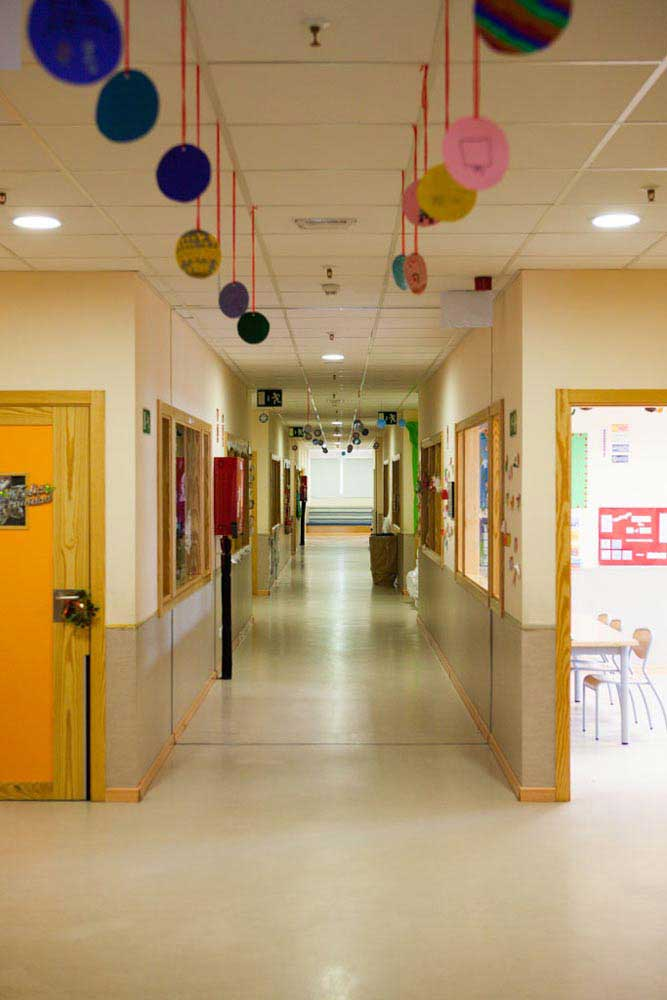
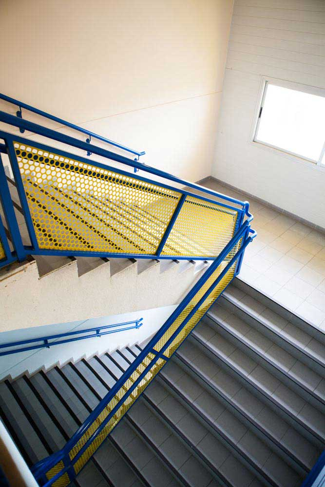

El AMPTA
Nuestros objetivos
El objetivo del AMPTA es representar los intereses de madres, padres y tutores de los alumn@s del colegio ante la Dirección del Centro y la Propiedad. El AMPTA tiene además voto en el Consejo Escolar.
Cuantos más seamos, más importante será nuestra representación y más fuerte será nuestra voz. Como organización sin ánimo de lucro, velamos para que se cumpla el Proyecto Educativo del Centro y aspiramos, además, a enriquecer a la Comunidad Educativa con propuestas formativas, deportivas o lúdicas.
Nuestra finalidad es mantener una comunicación abierta con el colegio, al que le enviaremos la información y propuestas que estamos recogiendo para que entre todos nos aseguremos de tener unos servicios de calidad.

Cómo trabajamos
- Escuchamos y damos respuesta a las inquietudes de las familias.
- Mantenemos reuniones periódicas con la Dirección y la Propiedad del colegio. Les transmitimos las sugerencias y propuestas de mejora que hemos ido recopilando y establecemos rutas de actuación.
- Realizamos visitas sorpresa al comedor. Probamos el menú y observamos su funcionamiento. A partir de ahí informamos al centro de los puntos mejorables. Muchos de los avances en el servicio de comedor se han ido realizando gracias a este trabajo.
- A través de la Escuela de Madres y Padres organizamos charlas formativas encaminadas a afianzar la relación con nuestros hijos.
- Llevamos también a cabo talleres divulgativos y espectáculos dentro y fuera de las instalaciones del colegio.
- Participamos y organizamos carreras solidarias.
- Colaboramos haciendo acopio de alimentos o ropa para distintas organizaciones no gubernamentales.
Junta Directiva
Vocales
- Alma Hernández
- Henar García
- Karen Guerra
- Cristina de Ana
- Laura Mercadé
- Aissa Bamogo
- Angela Izcara
- Lena Schubert
- Elsa Hernández
- Rosalía Contreras
- Raquel García

Comisiones
El trabajo de la Junta se reparte en las diferentes comisiones de seguimiento, divididas según ciclos formativos, comedor u otros servicios:
- Comisión de Infantil
- Comisión de Primaria
- Comisión de Secundaria y Bachillerato
- Comisión de comedor y servicios, entre los que se incluye la ruta o las clases extraescolares
- Comisión de Escuela de Madres y Padres
- Comisión de seguimiento del PEC
Cuotas
Durante el curso 2026-2027 la cuota de socios será de 5 €. La próxima cuota será la que acuerde la Junta Directiva.
Con ese presupuesto se financian actividades para niñ@s y adult@s, formaciones como la de la Escuela de Madres y Padres o los conciertos para toda la familia.
Los fondos sirven también para sufragar uno de los eventos que más éxito tiene entre las soci@s: el patrocinio de las inscripciones a las distintas carreras solidarias en las que pueden participar todas las familias asociadas.
Los miembros de la Junta Directiva del AMPTA no reciben ningún tipo de asignación económica y todas nuestras cuentas son públicas y se pueden consultar. Trabajamos, únicamente, con el objetivo de mejorar el colegio.